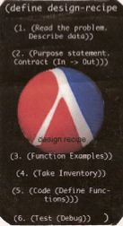

Additional Material
To illustrate the book's principles in different contexts,
we provide additional readings and exercises. These materials
cur rently cover topics such as the development of interactive Web
programs, mouse-click games, and election mathematics:
Problem Sets
Additional problems for the first 14 sections of the book:
The TeachScheme! Anniversary Workshop
The papers that go with the TeachScheme! Anniversary Workshop
presentations are available here:
Proceedings [219pages]
If you would like to have a bound hardcopy, please write to
Rachel Kalweit [rachelb _ at _ ccs.neu.edu] and provide a postal
address.
One of the activities I ask my students to do is to
create an index card from the design recipe in the
Preface and to carry it around in their wallets. On
occasion, I then call index card check and they are
then to hold up their index card with the recipe.
Here is the most impressive one from this semester:

Additional Teachpacks
Here are some additional teachpacks for HtDP: